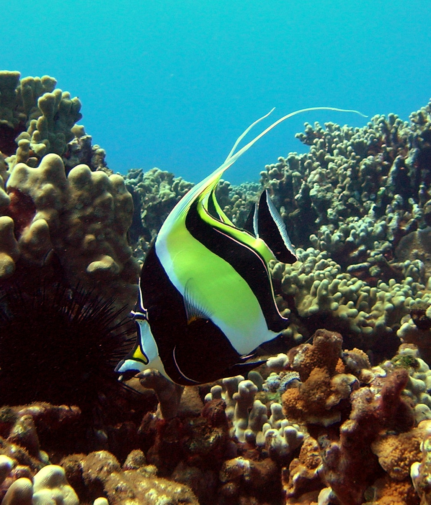

Life is an adventure, and I am an adventurer. Every day – every moment – has the potential to be something great. When given the opportunity to discover something new, explore an unknown location, or face a new challenge, my answer is always "yes!" I am no photographer, yet I take hundreds of pictures each year. You see, the human brain can only hold so many memories, but I want to remember them all! This collection of photos features some of my favorite people, places, and things to do. They are all dear to me – enjoy!
Diving
My favorite underwater photos from Hawaii, St. Thomas, and South Florida.
